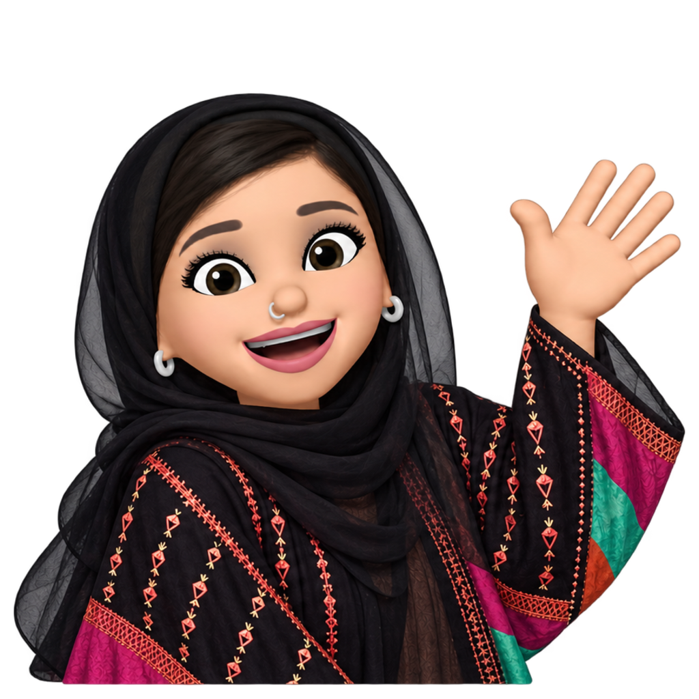
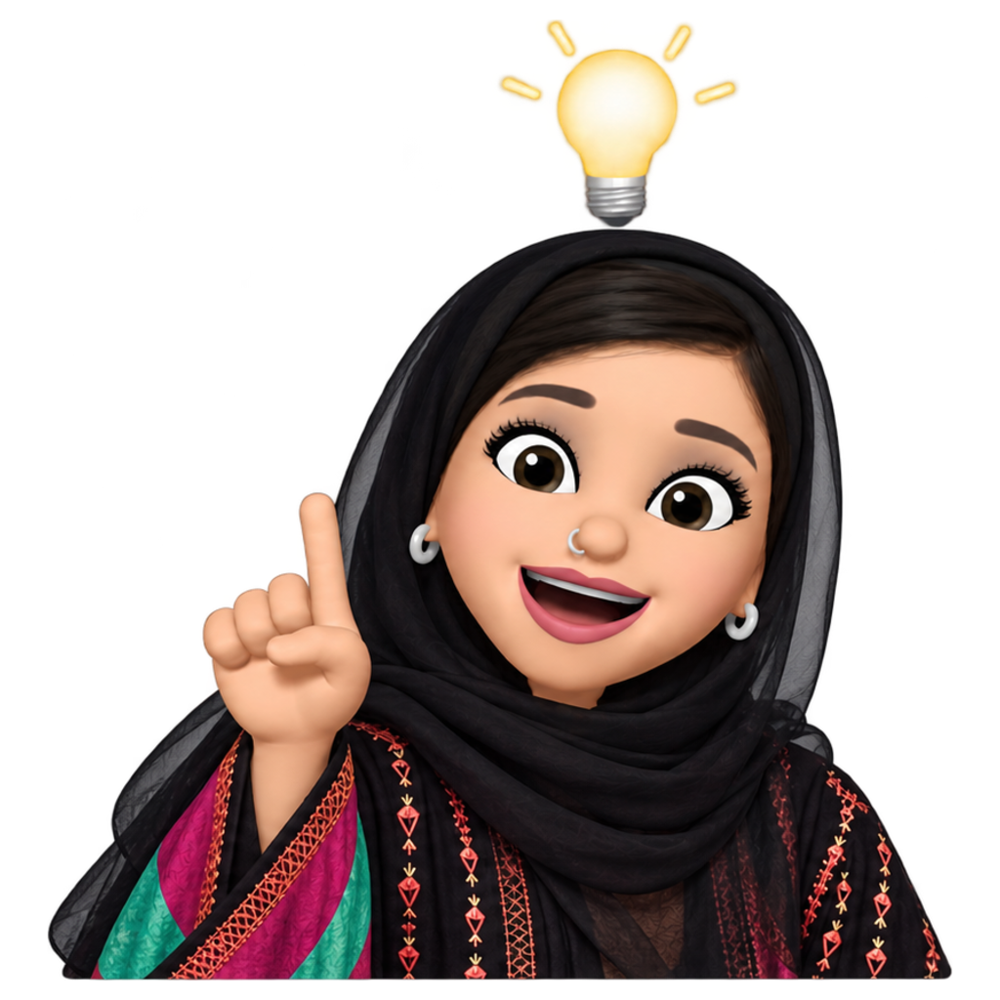

Norah Alaqeel — نورة العقيل
N
{{ t.navWork }}
{{ t.navAbout }}
{{ t.navHi }}
EN
عربي
{{ t.chipUni }}
{{ t.chipCity }}
{{ t.chipCoop }}
{{ t.h1a }}
{{ t.h1b }}
نـــــورة
{{ t.intro }}
{{ bubble }}


AR / EN
{{ t.workA }}
{{ t.workB }}
{{ p.n }}
{{ p.count }} {{ p.unit }}
{{ p.title }}
{{ p.short }}
{{ t.aboutA }}
{{ t.aboutB }}
{{ t.bio }}
{{ t.bioHi }}
{{ t.playA }}
{{ t.playB }}
{{ t.whyKick }}
{{ t.whyLine }}
{{ t.playSub }}
{{ t.dailyLine }}
{{ t.nextIn }}{{ countdown }}
{{ c.l }}
{{ msg }}
{{ k.label }}
{{ t.rulesTitle }}
{{ t.ruleG }}
{{ t.ruleY }}
{{ t.ruleX }}
{{ undoLabel }}
{{ t.hintBtn }}
{{ t.newWord }}
{{ hintText }}
{{ t.toolA }}
{{ t.toolB }}
{{ g.title }}
{{ s.n }}
~/norah/work/{{ cur.slug }}
←
→
{{ t.close }}
{{ cur.n }} — {{ cur.kind }}
{{ cur.title }}
{{ t.role }}
{{ cur.role }}
{{ t.what }}
{{ cur.what }}
{{ t.did }}
{{ cur.did }}
{{ tg }}